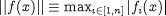

The algorithmic parameters used by SPARSE along with their default values are shown below. This is followed by a detailed description of each parameter.
"SPARSE" ["LASolver" := "MA48"; "BoundsTightening" := 0; "ConvergenceTolerance" := 1E-5; "EffectiveZero" := 1E-5; "FDPerturbation" := 1E-5; "IterationsWithoutNewJacobian" := 0; "MaxFuncs" := 1000000; "MaxIterations" := 1000; "MaxIterNoImprove" := 10; "MaxStructureSwitches" := 100; "NStepReductions" := 10; "OutputLevel" := 0; "SingPertFactor" := 1E-2; "SLRFactor" := 50;] ;
LASolver: A quoted string specifying a linear algebraic equation solver.
The solver to be used for the solution of linear algebraic equations at every iteration. This can be either one of the standard gPROMS linear algebraic equation solvers or a third-party linear algebraic equation solver (see the gPROMS System Programmer Guide). The default is MA48. This parameter can be followed by further specifications aimed at configuring the particular solver by setting values to its own algorithmic parameters.
BoundsTightening: A real number in the range [0.0, 1.0].
If this parameter is set to a non-zero value, then at each iteration, after applying its usual logic to impose the true variable bounds on the step taken, SPARSE will impose "tightened bounds". The exact value of the bounds used is dependent on the previous guess for each variable: if the ith variable has true lower bound xil, and previous guess xi(k), the tightened lower bound will be xil+ p (xi(k) - xil), where p is the value of this parameter. Similar logic is applied to the tightened upper bound.
ConvergenceTolerance: A real number in the range [10-20, 1010].
The tolerance used in testing for convergence of the nonlinear system f(x)=0 being solved. A system of n equations f(x) in n unknowns x is assumed to have converged when the norm of the equations:

falls below the ConvergenceTolerance. This is equivalent to the absolute value of the difference between the left and right hand sides of each and every equation in the system being below this tolerance. Note that no automatic scaling is applied by the solver.
EffectiveZero: A real number in the range [10-20, 1010].
The magnitude of a variable below which absolute rather than relative perturbations are used -- see parameters FDPerturbation, SingPertFactor and SLRFactor below.
FDPerturbation: A real number in the range [10-20, 1010].
Finite difference perturbation factor. If finite difference calculation of partial derivatives with respect to a variable x is required, x is perturbed by:
FDPerturbation × |x|
unless FDPerturbation × |x| is less than EffectiveZero (see above), in which case it is
perturbed by FDPerturbation.
IterationsWithoutNewJacobian: An integer in the range [0, 1000000].
If set to 0 SPARSE computes the Jacobian at every iteration. Otherwise, SPARSE will use a simple form of Modified Newton keeping the Jacobian for a set number of iterations. In some cases this can be used to speed up the solution.
MaxIterations: An integer in the range [1, 1000000].
The maximum number of iterations that the solver is allowed to take. Note that, unlike MaxFuncs (see above), this does not include any evaluations of the equations for the purpose of estimating elements of the Jacobian matrix using finite difference perturbations.
MaxFuncs: An integer in the range [1, 1000000].
The maximum number of evaluations of the vector of equations f(x) that is permitted during solution. This includes the equation evaluations required for approximating any elements of the Jacobian matrix ∂f/∂x that are not available analytically, using finite difference perturbations.
MaxIterNoImprove: An integer in the range [1, 1000000].
The maximum number of iterations without a reduction in the norm of the equation vector (see above) before the solver takes corrective action. For convergence to be achieved, this norm must eventually decrease to below the ConvergenceTolerance. However, it may actually increase between two consecutive iterations.
The solver monitors the norm at each iteration. It also keeps a record of the best (i.e. lowest) norm obtained so far in the solution, the values of the unknowns xbest at this point, and the step Δxbest taken from this point xbest. If no improvement over this best norm is observed within MaxIterNoImprove consecutive iterations, then the solver attempts to take corrective action, as follows:
the unknowns are reset to xbest + Δxbest/2;
the Jacobian matrix is recomputed, using finite differences for any elements not available analytically.
MaxStructureSwitches: An integer in the range [0, 1000000]
The maximum number of successive switches of conditional equations before the solution iterations will stop.
NStepReductions: An integer in the range [1, 1000000].
The maximum number of consecutive corrective actions that the solver is allowed to attempt. As explained in the context of parameter MaxIterNoImprove above, the solver attempts to take certain corrective actions if no improvement in the equation norm is achieved within a certain number of consecutive iterations. If such corrective action is attempted more than NStepReductions times in a row (i.e. having to return to the same xbest in all cases), then the solver terminates its operation unsuccessfully.
OutputLevel: An integer in the range [-1, 10].
The amount of information generated by the solver. The following table indicates the lowest level at which different types of information are produced:
| -1 | (None) |
| 0 | Halving of step due to unsatisfactory progress, initial point out of bounds |
| 1 | Solution parameters on first use, variables hitting bounds |
| 2 | Method and scaling information, residual and call number on convergence, failure to improve in MaxIterNoImprove iterations, residual and worst equation number at each call to driver, variables stuck on bounds, number of variables reset to bounds |
| 3 | Variable and equation names of each nonlinear system, call number and condition on each call to driver, step reduction factors, various measures of the largest steps taken at each iteration |
| 4 | Residuals at every evaluation, variables at each iteration, lists of variables being perturbed |
| 5 | Variable values before solution, workspace information, solutions of linear systems (i.e. steps) |
| 6 | Complete Jacobian at each factorisation |
| 10 | Solution parameters on every use |
SingPertFactor: A real number in the range [10-20, 1010].
The perturbation factor used for escaping from local singularities. If, at a certain iteration, the Jacobian matrix is found to be singular (with a rank r that is less than the size of the system n), the solver attempts to escape from such a point by applying a perturbation to n-r of the system variables. For a variable x, the size of this perturbation is:
SingPertFactor × |x|
unless |x| is less than EffectiveZero (see above), in which case it is perturbed by SingPertFactor.
SLRFactor: A real number in the range [10-20, 1010].
The step length restriction factor, β. In the interests of improving convergence from poor initial guesses, the solver automatically limits the step taken in any iteration by a fraction α ∊ (0,1] so that the magnitude of the change in any variable x does not exceed:
β|x| if x is equal to, or exceeds the EffectiveZero (see above);
β otherwise.